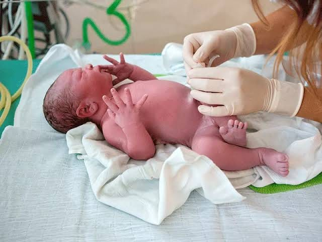
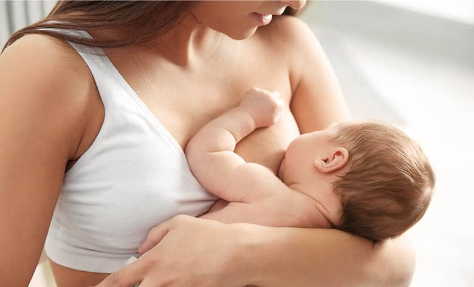
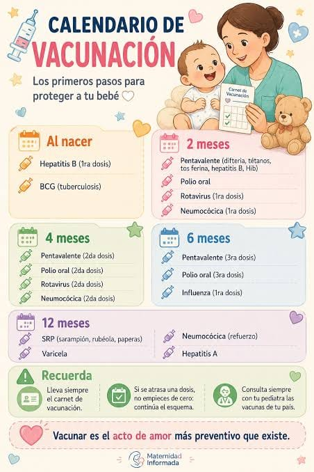

🍼
Alimentación y lactancia
Información sobre la alimentación del recién nacido y la importancia de una adecuada lactancia.
Ver información →
Información y recomendaciones para el cuidado, alimentación, higiene y bienestar del bebé y cuidado del cordón umbilical.
Información y recomendaciones para el cuidado del bebé
Encuentra información y recomendaciones importantes para brindar los mejores cuidados durante los primeros días de vida del bebé.
Comenzar
La alimentación del recién nacido es un aspecto fundamental para su crecimiento y desarrollo. La lactancia materna es una forma importante de proporcionar nutrientes y protección al bebé.
La higiene del recién nacido requiere cuidado y atención, especialmente durante los primeros días de vida.
El descanso es importante para el desarrollo del recién nacido. El espacio donde duerme debe mantenerse seguro y adecuado.
Los controles de salud permiten realizar un seguimiento del crecimiento y desarrollo del recién nacido y detectar oportunamente posibles problemas.
Algunas situaciones en un recién nacido requieren atención médica. Ante cualquier preocupación sobre el estado del bebé, es importante consultar con un profesional de salud.
Esta página tiene finalidad educativa y no reemplaza la evaluación ni las indicaciones de un profesional de salud.
Conoce algunos aspectos importantes para el cuidado y bienestar del recién nacido durante sus primeros días de vida.
Información sobre la alimentación del recién nacido y la importancia de una adecuada lactancia.
Ver información →Recomendaciones básicas para mantener una adecuada higiene y cuidar la piel del bebé.
Ver información →Conoce recomendaciones importantes para proporcionar un espacio seguro durante el descanso del bebé.
Ver información →Información sobre la importancia de los controles de salud y el seguimiento del recién nacido.
Ver información →Conoce algunas señales importantes ante las cuales se debe buscar orientación o atención profesional.
Ver información →

1:Preparación y seguridad
2:Orden de lavado (de arriba hacia abajo)
En este video aprenderás más sobre el cuidado adecuado del recién nacido.
el sueño seguro son las medidas que se deben aplicar para proteger al bebé mientras duerme y disminuir el riesgo de asfixia, sofocación y muerte súbita del lactante.
1. posición para dormir
2. lugar adecuado
3. cuna despejada
4. compartir habitación
5. evitar el exceso de calor
6. ambiente libre de humo
7. lactancia materna
8. tiempo boca abajo
Vacunas iniciales (Primeras 24 horas)

mantener la zona limpia y seca para facilitar su caída natural entre los 5 y 15 días de vida.
3:Pasos para la limpieza diaria
2:Qué debes evitar
3:Señales de alarma (Cuándo consultar al médico)
Lleva al bebé al centro de salud o pediatra si notas:
En este video aprenderás más sobre el cuidado del cordón umbilical.